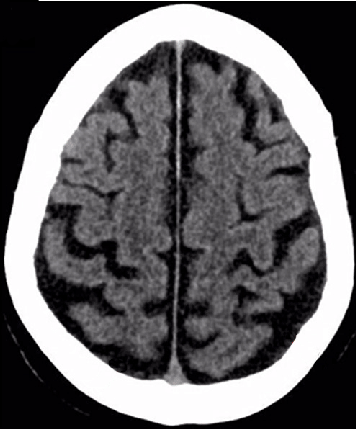
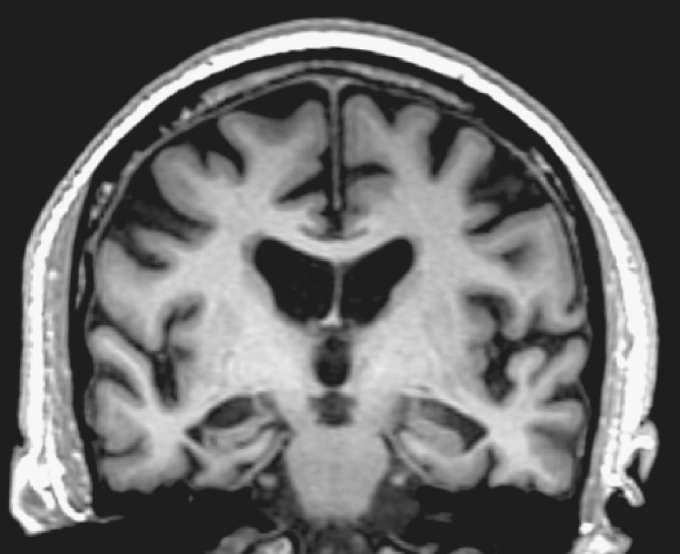

What is the most likely diagnosis?
What 2 risks are particularly important to ask about in the history for patients with this diagnosis? Select all that apply.
What is the most appropriate next step in the investigation of this patient?
What is the first line drug treatment for this disease?

|
 |
|